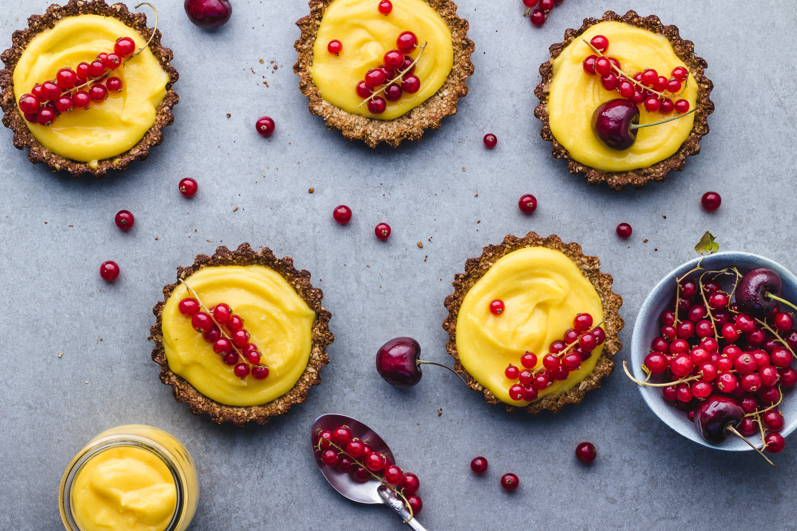
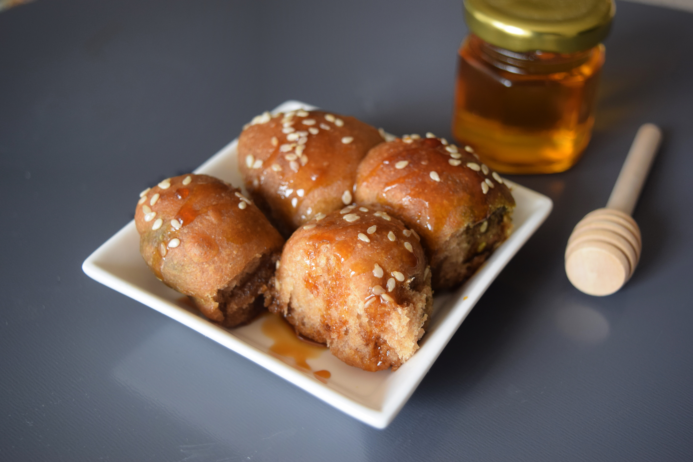
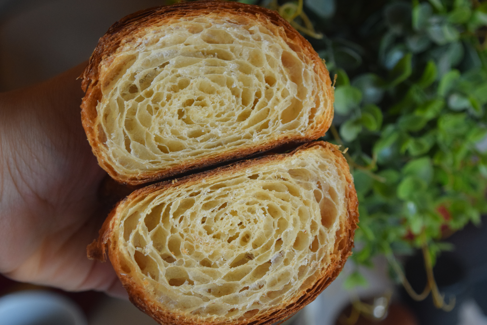
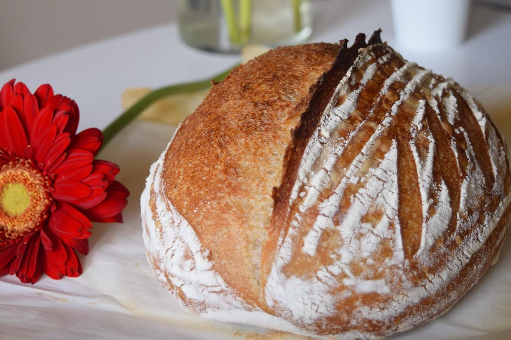

LATEST RECIPES
Summer Recipes ...
Mango Custard with Cherries
Give your next bake a seasonal twist with mango puree in this mango tart. Rich shortcrust pastry filled with a delicious creamy mango custard, baked until golden, and blistered on the top with cherry.
strawberry meringues

Strawberry Meringues are an easily made, elegant dessert. They look impressive, however, they are very simple to prepare.
More Recipes

Dinner
Roll
Roll

Sourdough
Crossiant
Crossiant

Multigrain
Sordough
Sordough